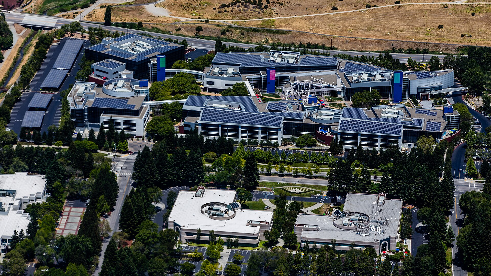

Alphabet’s cash flow turns negative and its shares slide 9% as Microsoft’s Azure grows 48% on the same night

Alphabet reported third-quarter revenue of $127.6 billion on Wednesday, up 25%, but free cash flow of minus $9.1 billion after $51.4 billion of capital spending, and its shares fell more than 9% after hours, SiliconANGLE reported. Net income dropped to $26.2 billion from $35.0 billion, pulled down by an $8.7 billion , and long-term debt reached $125.1 billion, up from $46.5 billion at the end of 2025, according to the company’s release.
more than doubled to $30.7 billion, with operating income of $11.1 billion, while Search grew 12%. Sundar Pichai said the company is on a “half-trillion dollar revenue run rate,” and the Gemini app passed 1 billion users. Chief financial officer Anat Ashkenazi held 2026 capital spending at $195 billion to $205 billion and said 2027 would exceed $300 billion, SiliconANGLE reported.
“Right now, Alphabet earns more selling AI to its rivals than using it itself.”
Microsoft, reporting the same evening, said Azure grew 48% to $33.2 billion, the first time it has disclosed the business in dollars, on revenue of $92.3 billion, up 19%. Its rose 73% to $677 billion, and it booked $10 billion of revenue from , TechCrunch reported. Spending on property and equipment doubled to $39.4 billion, or $45.2 billion counting , and the shares rose about 4% late. Chief financial officer Amy Hood said, “We still have demand that exceeds supply,” and guided Azure growth to 49% to 50% in constant currency next quarter, SiliconANGLE reported.